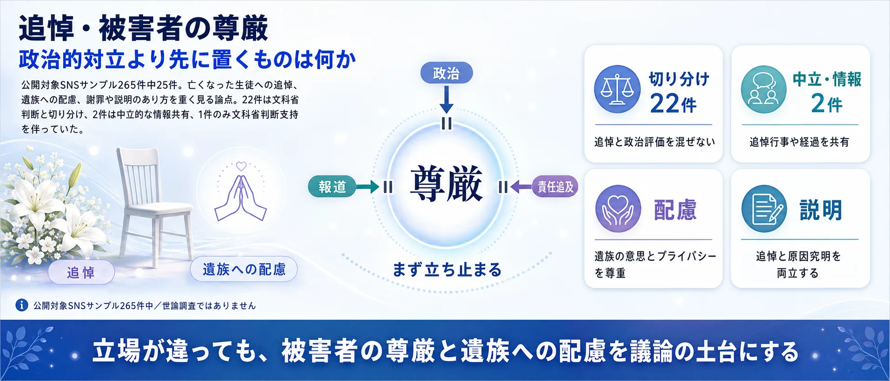
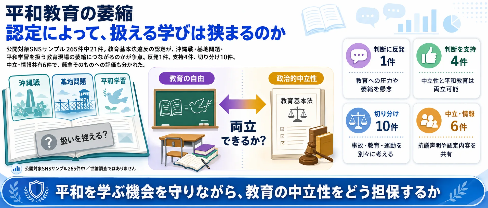
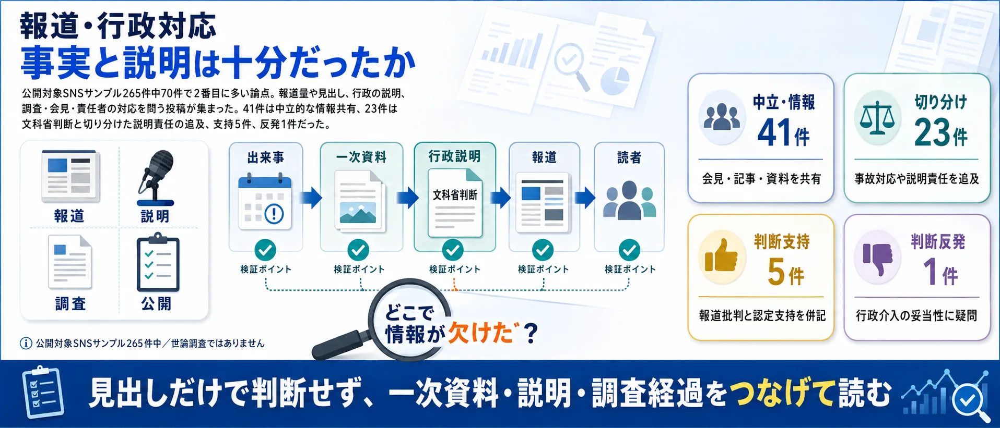

分析対象の意見
265件
事故、教育、政治、追悼を切り分けて比較
事故の検証と教育の評価、どの論点を重く見る？
収集したSNS投稿のうち、分析対象となった意見265件をAIが6つの論点に整理しました。世論調査ではなく、SNS反応サンプルの論点比較です。
事故、教育、政治、追悼を切り分けて比較
乗船判断、引率責任、事故原因と再発防止
事故検証と教育・政治評価を分ける声が最多
この話題には、事故の検証と教育内容への評価という別々の問いが重なっています。「文科省判断への賛否」だけでまとめず、SNSで語られた6つの論点を先に確認してから、自分が重く見る論点を選んでください。
⚖️ 政治的中立性 — 「修学旅行に政治活動は含まれるか」
修学旅行中の活動が教育として許される範囲を越えたのか。文科省が教育基本法違反を認定した核心論点（53件）。

🛟 安全管理・事故原因 — 「乗船判断と引率体制は適切だったか」
教育内容への評価とは切り離して、乗船判断・運航体制・引率責任・再発防止を問う論点（75件）。

🕊️ 追悼と被害者の尊厳 — 「政治論争より先に悼むべきか」
政治的対立より先に、亡くなった生徒への追悼と遺族への配慮を置くべきではないかという問い（25件）。

📚 平和教育の萎縮 — 「違反認定が沖縄平和学習を萎縮させるか」
教育基本法違反認定が、沖縄戦や基地問題を扱う教育現場の自己規制を生むかを問う（21件）。

📣 政治利用・基地問題 — 「教育か、運動への動員か」
生徒を基地反対運動へ巻き込んだのか、地域の現実を学ぶ正当な教育活動だったのかを問う（21件）。

📰 報道・行政対応 — 「事故と教育問題を結びつけた報道は適切か」
事故・安全管理・教育内容を報道・行政がどう関連づけ、どの事実を強調したかを問う（70件）。

使い方： 次の投票で「最も重く見る論点」と「文科省判断への評価」を選ぶと、論点アリーナにあなたの位置が表示されます。
事故の責任、教育の中立性、平和教育への影響は別々に考えられます。まず最も重く見る論点を選び、次に文科省判断への総合評価を選んでください。
1最も重く見る論点を選ぶ （全2問）
※ 世論調査ではありません。回答はこのブラウザに保存されます。
中心の「辺野古高校生死亡事故」を6つの論点が囲みます。扇の大きさは投稿数、中心からの距離は反応の強さ、点の色は文科省判断への評価です。点を選ぶと投稿の要旨を確認でき、クリックでXを開きます。

文科省の教育基本法違反認定を評価する声が43%で最多。修学旅行中の活動が教育として許される範囲を越えて特定の政治活動に接近していたかを問う論点で、疑問視する声も29%と二極化が最大。
教育内容の評価とは独立して、乗船判断・運航体制・引率責任・原因究明・再発防止を問う声が集中。全75件が「切り分け」スタンスで、文科省の教育認定とは別に事故責任を問うべきという立場で一致している。
政治的対立を超えて、亡くなった生徒への追悼と遺族への配慮を前に置く声。96%が切り分けスタンスで、対立よりも静かな悼みの場として機能。遺族の言葉がSNSで広く共有された。
教育基本法違反認定によって沖縄戦・基地問題を扱う教育現場が萎縮しないかを問う。「萎縮すべき」という評価が19%あり、懸念する声（疑問）も5%。認定を支持する側と平和教育を守る側で対立が見える。
生徒を基地反対運動に巻き込んだのか、共産党や玉城知事の関与をどう評価するか。95%が「切り分け」スタンスで、感情論ではなく関係者の責任・関与の事実整理を求める声が主流。
メディア報道の偏り・行政（知事・文科省）の対応姿勢を問う。91%が「切り分け」で事実確認・報道批判が中心。NHKへの批判も、共産党機関紙への批判も共存し、左右のメディア双方が槍玉に上がる。
沖縄・辺野古を修学旅行で訪れていた高校生が死亡した事故をめぐり、学校の安全管理や旅行行程のあり方に加え、文部科学省が当該校の平和教育の内容を「教育基本法違反」と認定したことが大きな議論を呼んでいます。
文科省の認定を支持する立場からは「学校教育には政治的中立性が求められる」「特定の政治的立場に偏った教育は是正されるべきだ」という声があります。一方で批判する立場からは「事故の責任と教育内容の問題を結びつけるのは筋違い」「国の認定によって沖縄の平和教育・基地問題学習そのものが萎縮する」という懸念が示されています。
亡くなった生徒への追悼の声が広くあがる一方で、事故そのものの原因究明や再発防止と、教育内容への国の関与の是非という異なる論点が絡み合い、SNS上の反応も複雑に分かれています。
教育内容よりも、未成年を危険な現場に連れて行った引率・安全管理・再発防止を重く見る立場。
平和学習の範囲を超え、特定の政治活動に関わらせたのではないかと見る立場。
教育基本法違反認定が行きすぎで、基地問題や平和教育を扱う教育現場が萎縮すると見る立場。
断定、罵倒、未確認情報が混ざり、記事化には要約・確認が必要な反応。
| 支持×政治（右上） | 181 |
|---|---|
| 反発×政治（左上） | 41 |
| 中立・原点付近 | 44 |
| 支持×事故（右下） | 27 |
| 反発×事故（左下） | 2 |
| 合計 | 295 |
| 政治利用・反基地運動批判 | 108 |
|---|---|
| 文科省判断支持・政治的中立性違反を指摘 | 100 |
| 安全管理・引率責任を問題視 | 81 |
| 未確認・過激表現 | 22 |
| 追悼・慰霊への共感 | 20 |
| 報道・行政対応批判 | 20 |
| 学校・教育委員会批判 | 20 |
| 事実確認・情報共有 | 16 |
| 文科省判断への反発・平和教育萎縮を懸念 | 10 |
| 基地問題・反基地論への接続 | 2 |
| 事故原因・再発防止への関心 | 2 |
| その他・分類保留 | 2 |
| 選択肢 | mext (x) | focus (y) | 対応象限 |
|---|---|---|---|
| 安全管理の問題が一番大きい | 0 | -1.5 | 中立×事故 |
| 文科省の判断は妥当だと思う | +1.5 | +1.5 | 支持×政治 |
| 平和教育が萎縮しないか心配 | -1.5 | +1.0 | 反発×政治 |
| よくわからない・情報不足 | 0 | 0 | 中立 |